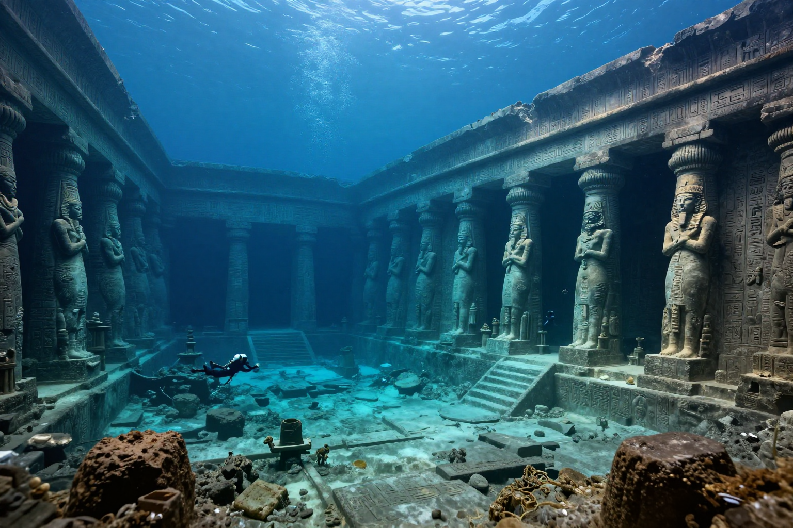
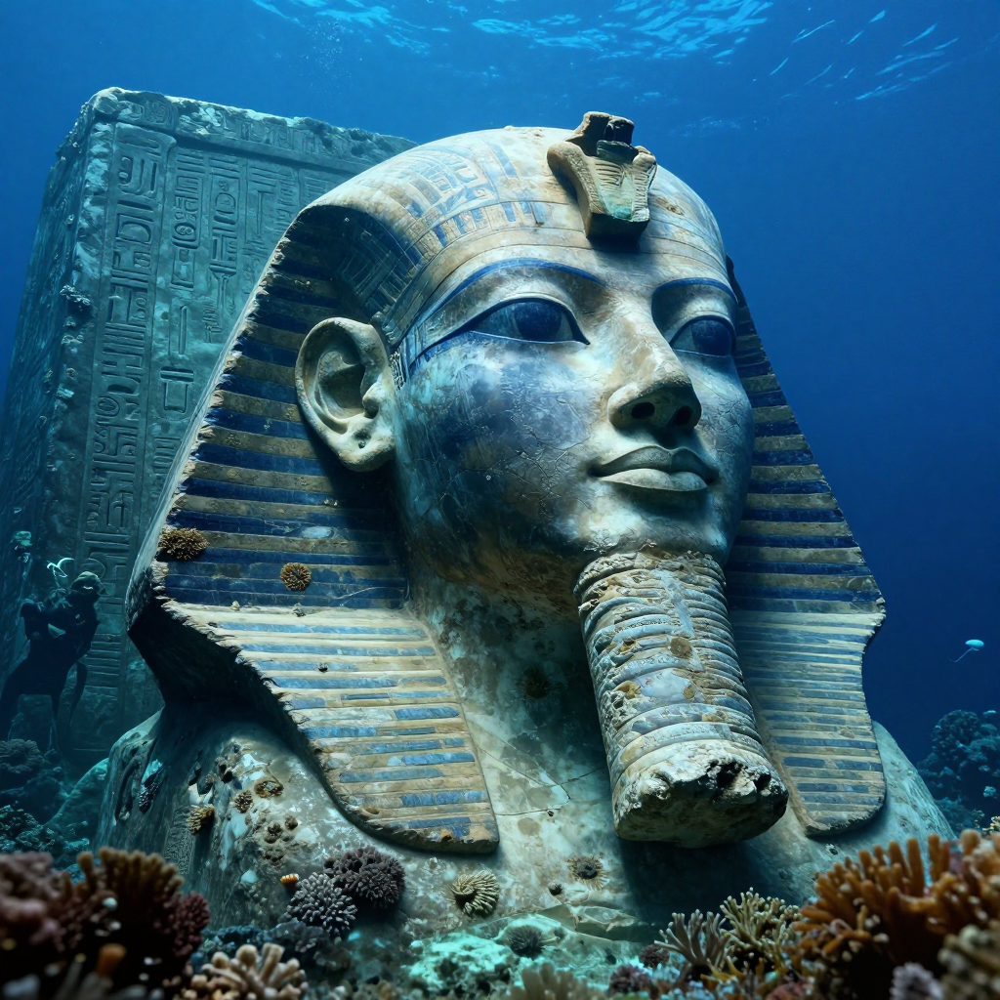
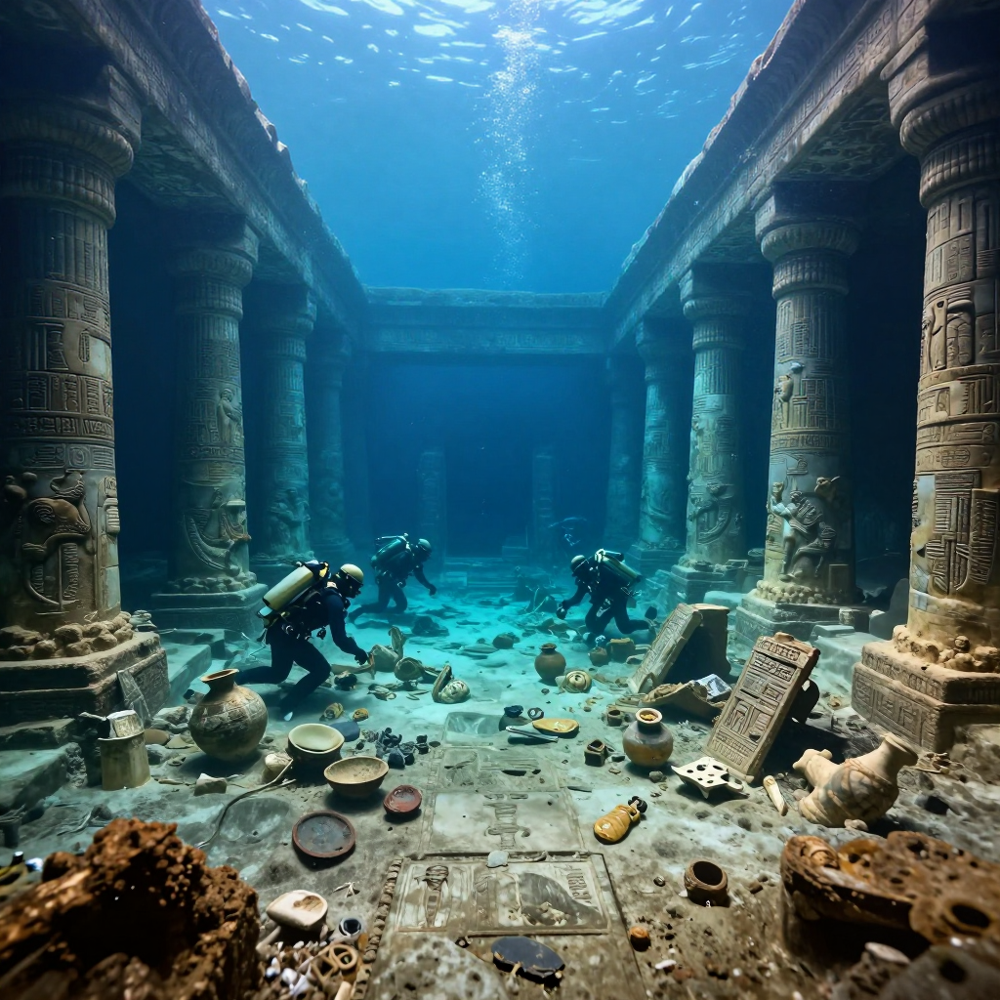

The Lost City of Heracleion

Imagine a busy, beautiful city with grand temples, towering statues, and ships coming and going every day. Now imagine that entire city disappearing underwater for more than a thousand years! That's the incredible true story of Heracleion.
A City That Vanished
Heracleion (also called Thonis by the ancient Egyptians) was once one of the most important port cities in the ancient world. Located at the mouth of the Nile River in Egypt, it was the place where trading ships from Greece and other Mediterranean lands would dock.
🌊 Fun Fact: Heracleion sank around the 2nd century BCE, and no one knew where it was for over 1,200 years! That's longer than the time between the Middle Ages and today!
How Did a Whole City Sink?
Scientists believe Heracleion was built on soft, unstable ground. Over time, several things likely caused it to sink:
- Rising sea levels after the last Ice Age
- Earthquakes that weakened the ground
- The weight of huge stone buildings on soft soil
The city slowly slipped beneath the Mediterranean Sea, and people eventually forgot it had ever existed.
The Amazing Discovery
In the year 2000, underwater archaeologist Franck Goddio and his team made one of the greatest archaeological discoveries ever. Using special equipment to map the sea floor, they found the ruins of Heracleion about 6.5 kilometers off the coast of Egypt!

Divers discovered giant statues covered in hieroglyphics lying on the sea floor
🗿 Fun Fact: Divers found a statue of the god Hapi that was over 16 feet (5 meters) tall! It had been lying underwater for more than a thousand years!
What Did They Find?
The underwater excavation revealed amazing treasures:
- Giant stone statues of Egyptian gods and pharaohs
- Temple columns and building foundations
- Ceramic pottery and ceremonial objects
- Ancient ships preserved in the mud
- Gold jewelry and precious coins
- Stone tablets with hieroglyphic writing

Temple columns and artifacts remain where they fell over 1,200 years ago
Why Was Heracleion Important?
Heracleion wasn't just any city - it was a major gateway between ancient Egypt and the rest of the world! Greek traders had to stop here before traveling further into Egypt. The city had:
- A massive Temple of Amun where important ceremonies took place
- Busy markets selling goods from across the Mediterranean
- Religious festivals that attracted visitors from far away
⚓ Fun Fact: Archaeologists found over 70 ancient shipwrecks in the area! That's the largest collection of ancient ships ever discovered in one place!
What We Can Learn
- History can hide anywhere - even underwater!
- Technology helps us discover the past in new ways
- Ancient civilizations were more connected than we thought
- Nature is powerful - even great cities can disappear
The Lost City of Heracleion reminds us that our world still holds incredible secrets waiting to be discovered. What other lost cities might be hiding beneath the waves?
← Back to Ancient Mysteries